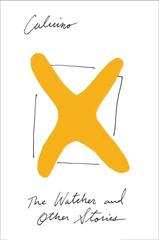

The Watcher
La giornata d'uno scrutatore
Three solid ... novelletes, I think? And Calvino's signature style is fully on display. I think "The Watcher" is the first instance of a sentence that goes on for a full page, leaping from thought to thought and theme to theme, heedless of the "rules of good writing." This is the style that I fell in love with; I don't know that I understood when I first encountered it, but this is how I think. In daily life, I often find myself trying to track the history of how I got to whatever my current thought is -- what leaps and connections got me from there to here. Reading Calvino is an externalization of that process, and it often feels comfortable and familiar as a result.
But! On to the stories themselves. Both "The Watcher" and "Smog" feel startlingly relevant to the current world. Politics in the US is a mess, and the tale of the ineffectual, distracted, disillusioned poll watcher Ormea rings true, as does the background pattern of joyful changes finally> happening, only to be replaced with the inevitable rising tide of bureaucracy.
"Smog," on the other hand, might be the earliest depiction of greenwashing I know of? The industrialist playing a critical role in creating pollution is also the head of the nominal organization fighting against it, all while keeping the resistance toothless. It's the appearance of progressivism to blunt the truths of extractive capitalism -- and then it's paired with the unproductive labor movement, and the flightiness of unattached wealth and privilege with Claudia.
Add in "The Argentine Ant," as well, and I think the main theme across all three stories is one of stuckness. Ormea is stuck in a society that resists change, and sees the same scenes of disabled voters repeated throughout the day. The narrator in "Smog" lives in a city made homogeneous by the pollution hanging over it -- so much so that he mistakes an unknown neighborhood for his own. And the Reginaudos and the Braunis in "The Argentine Ant" are each completely captured by their own doomed strategies, unable to change in any meaningful way.
There is a bit of hope, I think -- Omera appreciating the beauty of the city after the polls close, the editor following the (all the same) laundry carts discovers a relative paradise in Barca Bertulla, and the family in "The Argentine Ant" may escape falling into the trap that has forced everyone else they interact with into an almost Groundhog Day-like existence of trying and failing to deal with the ants -- but on the whole these stories feel cautionary, examples of what arrested development can look like and why it should be avoided.